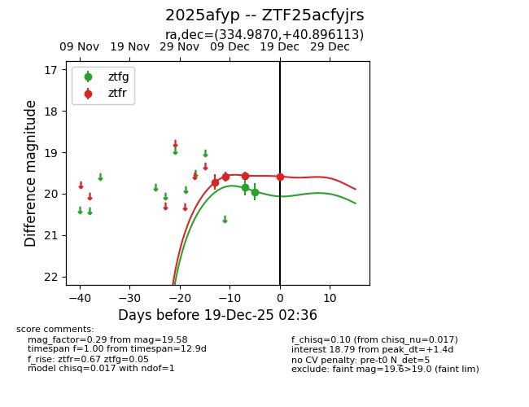
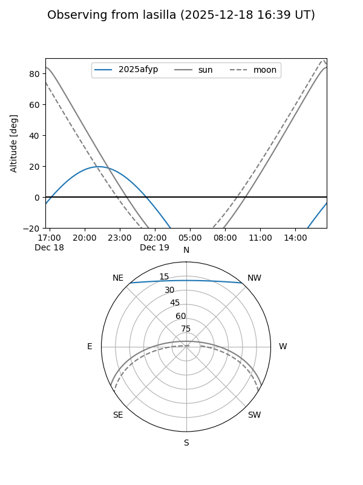
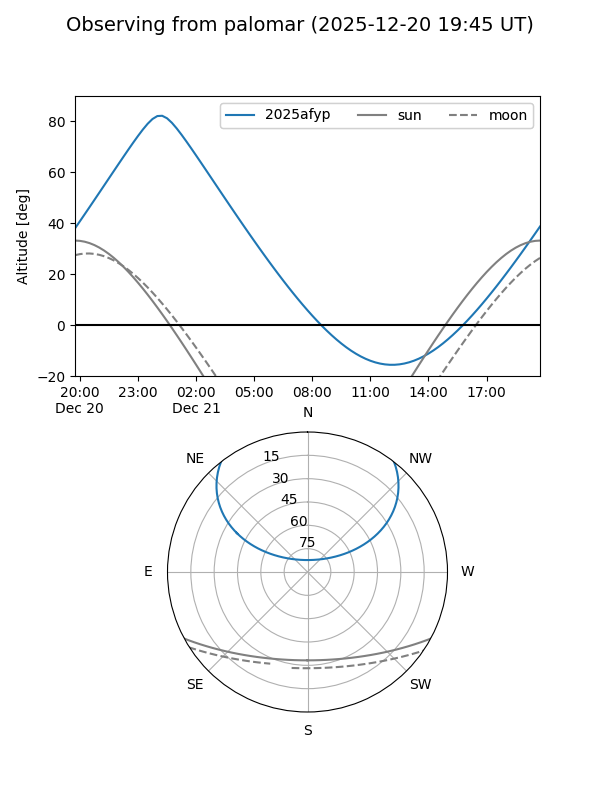

2025afyp
Target 2025afyp at 2025-12-18 11:17
Aliases and brokers:
FINK: fink-portal.org/ZTF25acfyjrs
Lasair: lasair-ztf.lsst.ac.uk/objects/ZTF25acfyjrs
ALeRCE: alerce.online/object/ZTF25acfyjrs
TNS: wis-tns.org/object/2025afyp
YSE: ziggy.ucolick.org/yse/transient_detail/2025afyp
alt names
ZTF25acfyjrs (ztf,fink_ztf)
2025afyp (tns,yse)
Coordinates:
equatorial (ra, dec) = 334.9870,+40.89611
equatorial (HMS+DMS) = 22:19:56.87,+40:53:46.01
galactic (l, b) = (94.4339,-13.44541)
Photometry
last ztfg=19.96, ztfr=19.56
2 ztfg, 3 ztfr detections
Lightcurve

Visibility


Additional plots